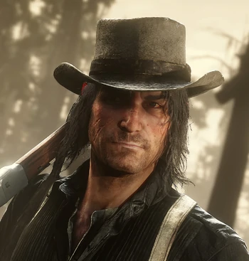

John Marston
Avant d'être recueilli par Dutch à l'âge de 12 ans, John survivait par ses propres moyens dans la rue. Rusé, intrépide et obstiné, lui et Arthur sont les deux protégés favoris de Dutch.
Histoire
John Marston naît en 1873. Son père était un immigrant écossais analphabète, lui-même né sur un bateau à New York. John le considérait comme un piteux alcoolique. Quant à sa mère, elle était une prostituée, décédée pendant l'accouchement.Quand John avait seulement 8 ans, son père devient aveugle au cours d'une bagarre de bar, à Chicago. Il meurt la même année. Le jeune Marston a par la suite été envoyé dans un orphelinat dont il finit par s'enfuir.
En 1885, à seulement 12 ans, il vole dans un village de l'Illinois et est proche d'être lynché par les habitants. Il est sauvé par Dutch van der Linde et Hosea Matthews, qui forment une bande de hors-la-loi. John rencontre également Arthur Morgan, de dix ans son aîné et un membre de la bande depuis six ans. John et Arthur éprouveront une certaine jalousie envers l'un et l'autre au sujet de savoir qui était le préféré de Dutch. Grâce à celui-ci, John apprend à lire, à tirer, à chasser et plus largement à survivre. John et la bande commettent de nombreux méfaits à travers l'Ouest américain, acquérant une certaine renommée. Il est totalement en phase avec la vision de Dutch, qui laissait entendre que la bande vole et tue pour un intérêt supérieur, tout en formant une famille dont tous les membres étaient des "fils de Dutch", des "frères". John admettra plus tard que ces justifications étaient en réalité des excuses pour voler et tuer impunément et donner du sens à leurs déshonorables actions.
En 1894, une prostituée du nom d'Abigail Roberts rejoint la bande. Bien qu'elle ait alors des relations sexuelles avec la plupart des membres de la bande, elle tombe amoureuse de John. De leur union naît John Jr., dit Jack. La bande devient la famille du jeune garçon, qui considère ses membres comme des oncles et des tantes. Lorsque Jack atteint l'âge d'un an, John décide de quitter la bande pendant près d'un an, avant de finalement revenir. Cette décision sera dans un premier temps très mal perçue par Arthur Morgan, alors même que Dutch et d'autres membres de la bande l'accueillent à bras ouverts. De là, la rivalité entre Arthur et John continue de grandir au fil des années. Un certain froid s'installe entre eux. La bande est alors renforcée par les arrivées de Bill Williamson, Javier Escuella, Susan Grimshaw, Molly O'Shea, Mary-Beth Gaskill, Tilly Jackson, Sean MacGuire, Lenny Summers, Mac Callander et son frère Davey, Orville Swanson, Karen Jones, l'Oncle, Simon Pearson, Josiah Trelawny, Leopold "Herr" Strauss, Jenny Kirk, Bessie Matthews et Annabelle.
En 1899, d'autres personnes rejoignent la bande, parmi lesquelles Charles Smith et Micah Bell. Ce dernier a alors l'idée de faire un gros coup : braquer un ferry à dans la ville de Blackwater. Ce braquage sera alors connu sous le nom de massacre de Blackwater. La bande vole 150 000 dollars, mais la situation tourne court lorsque les représentants de la loi, et principalement la Pinkerton National Detective Agency, sont tout près de capturer la bande de hors-la-loi. Dans la panique, Dutch tue une femme innocente, Heidi McCourt. John est blessé à la jambe, Mac et Jenny meurent, Davey est grièvement blessé et Sean est capturé par les forces de l'ordre. Les membres survivants de la bande parviennent à prendre la fuite. Dutch perd une grande partie de l'argent volé dans la fuite, mais parvient à cacher le reste dans un endroit secret à Blackwater.

Naissance - 1873
Statut - Décédé (1911)
Sexe - Masculin
Nationalité - Américaine
Occupation - Hors-la-loi
Anecdote John ne sait pas nager et se noie dans les eaux profondes, semblable à la plupart des protagonistes de la série de Rockstar Grand Theft Auto.